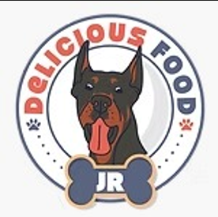

Inicio
Procesar informacion
Kit de Herramientas
Primer Semestre
Intervenir
Procesar informacion
Aplicar tecnologias
Segundo Trimestre
1
2
3
Tercer Trimestre
1
2
3
Tu navegador no soporta el elemento de video.
Bienvenidos a Delicious food jr sas
Tu navegador no soporta el elemento de video.
Bienvenidos a Delicious food jr sas
Trimestre 1
procesar la información de acuerdo con las necesidades de la organización
marcela buitrago